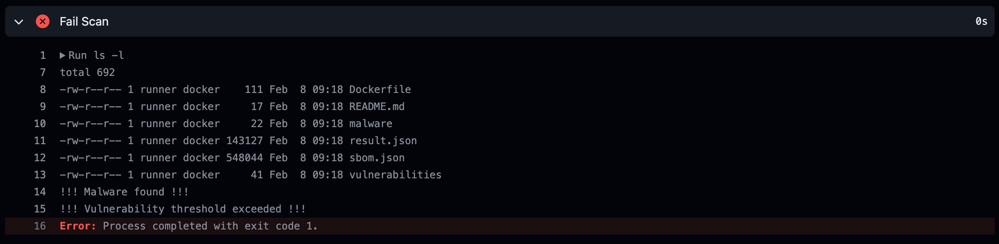

Scenario: Container Image Vulnerability and Malware Scanning as GitHub Action¶
DRAFT
Prerequisites¶
- Vision One Container Security Artifact Scanner API-Key with the following permissions:
- Cloud Security Operations
- Container Protection
- Run artifact scan
- GitHub Account.
- Docker Hub Account (optional).
- Kubernetes Cluster (ideally) with Vision One Container Security deployed.
About GitHub Actions¶
GitHub Actions is a continuous integration and continuous delivery (CI/CD) platform that allows you to automate your build, test, and deployment pipeline. You can create workflows that build and test every pull request to your repository, or deploy merged pull requests to production.
GitHub Actions goes beyond just DevOps and lets you run workflows when other events happen in your repository. For example, you can run a workflow to automatically add the appropriate labels whenever someone creates a new issue in your repository.
You can configure a GitHub Actions workflow to be triggered when an event occurs in your repository, such as a pull request being opened or an issue being created. Your workflow contains one or more jobs which can run in sequential order or in parallel. Each job will run inside its own virtual machine runner, or inside a container, and has one or more steps that either run a script that you define or run an action, which is a reusable extension that can simplify your workflow.
A workflow is a configurable automated process that will run one or more jobs. Workflows are defined by a YAML file checked in to your repository and will run when triggered by an event in your repository, or they can be triggered manually, or at a defined schedule.
Workflows are defined in the .github/workflows directory in a repository, and a repository can have multiple workflows, each of which can perform a different set of tasks. For example, you can have one workflow to build and test pull requests, another workflow to deploy your application every time a release is created, and still another workflow that adds a label every time someone opens a new issue.
In this scenario we're going to create a workflow to automatically build, push and scan a container image with Trend Micro Artifact Scanning. The scan will check the image for vulnerabilities and malware.
Fork the Scenario Repo¶
The first step is to fork the scenarios GitHub repo. For this go to github.com and sign in or create a free account if you need to.
Next, we want to create a Fork of the scenarios repo. A fork is a copy of a repository. Forking a repository allows you to freely experiment with changes without affecting the original project.
To do this navigate to the repo playground-one-scenario-github-action and click on the Fork-button in the upper right.
On the next screen press [Create fork] which will bring you back to your account.
The Repo¶
The repo containes basically a very simple Dockerfile and a hidden directory .github/workflows with a yaml-file.
The Dockerfile specifies the image to build. As we can easily see, it is using the latest nginx as the base image and just adds (very obviously) an Eicar.
The Workflow¶
The yaml-file in .github/workflows is more interesting. Let's go through it.
name: ci
# A push on the repo triggers the workflow
on:
push:
branches:
- "main"
jobs:
docker:
runs-on: ubuntu-latest
steps:
# Prepare the Docker Buildx environment
- name: Checkout
uses: actions/checkout@v4
- name: Set up QEMU
uses: docker/setup-qemu-action@v3
- name: Set up Docker Buildx
uses: docker/setup-buildx-action@v3
# At first, we build the image and save it as a tar ball
- name: Build and store
uses: docker/build-push-action@v5
with:
context: .
tags: ${{ secrets.IMAGE_NAME }}:${{ secrets.IMAGE_TAG }}
outputs: type=docker,dest=/tmp/image.tar
# Next step is to scan the build image for vulnerabilities and malware
- name: Scan
env:
TMAS_API_KEY: ${{ secrets.TMAS_API_KEY }}
REGION: us-east-1
SBOM: true # Saves SBOM to SBOM.json so you can export it as an artifact later.
MALWARE_SCAN: true # Enable malware scan.
THRESHOLD: "critical"
run: |
# Install tmas latest version
curl -s -L https://gist.github.com/raphabot/abae09b46c29afc7c3b918b7b8ec2a5c/raw/ | bash
tmas scan "$(if [ "$MALWARE_SCAN" = true ]; then echo "--malwareScan"; fi)" -r "$REGION" docker-archive:/tmp/image.tar "$(if [ "$SBOM" = true ]; then echo "--saveSBOM"; fi)" | tee result.json
if [ "$SBOM" = true ]; then mv SBOM_* sbom.json; fi
echo Analyze result
fail=0
[ "${THRESHOLD}" = "any" ] && \
[ $(jq '.vulnerability.totalVulnCount' result.json) -ne 0 ] && fail=1
[ "${THRESHOLD}" = "critical" ] && \
[ $(jq '.vulnerability.criticalCount' result.json) -ne 0 ] && fail=2
[ "${THRESHOLD}" = "high" ] && \
[ $(jq '.vulnerability.highCount + .vulnerability.criticalCount' result.json) -ne 0 ] && fail=3
[ "${THRESHOLD}" = "medium" ] && \
[ $(jq '.vulnerability.mediumCount + .vulnerability.highCount + .vulnerability.criticalCount' result.json) -ne 0 ] && fail=4
[ "${THRESHOLD}" = "low" ] &&
[ $(jq '.vulnerability.lowCount + .vulnerability.mediumCount + .vulnerability.highCount + .vulnerability.criticalCount' result.json) -ne 0 ] && fail=5
[ $(jq '.malware.scanResult' result.json) -ne 0 ] && fail=6
[ $fail -eq 6 ] && echo !!! Malware found !!! > malware || true
[ $fail -ne 0 ] && echo !!! Vulnerability threshold exceeded !!! > vulnerabilities || true
# Upload Scan Result and SBOM Artifact if available
- name: Upload Scan Result Artifact
uses: actions/upload-artifact@v3
with:
name: scan-result
path: result.json
retention-days: 30
- name: Upload SBOM Artifact
uses: actions/upload-artifact@v3
with:
name: sbom
path: sbom.json
retention-days: 30
# Fail the workflow if we found malware or reach the vulnerability threshold
- name: Fail Scan
run: |
ls -l
if [ -f "malware" ]; then cat malware; fi
if [ -f "vulnerabilities" ]; then cat vulnerabilities; fi
if [ -f "malware" ] || [ -f "vulnerabilities" ]; then exit 1; fi
# Login to the registry. Here we just use Docker
- name: Login to Docker Hub
uses: docker/login-action@v3
with:
username: ${{ secrets.DOCKERHUB_USERNAME }}
password: ${{ secrets.DOCKERHUB_TOKEN }}
# Rebuild the image and push to registry. This is fast since everything is cached.
- name: Build and push
uses: docker/build-push-action@v5
with:
context: .
platforms: linux/amd64,linux/arm64
push: true
tags: ${{ secrets.DOCKERHUB_USERNAME }}/${{ secrets.IMAGE_NAME }}:${{ secrets.IMAGE_TAG }}
# Rescan in the registry to support admission control
- name: Registry Scan
env:
TMAS_API_KEY: ${{ secrets.TMAS_API_KEY }}
REGION: us-east-1
MALWARE_SCAN: true # Enable malware scan.
run: |
tmas scan "$(if [ "$MALWARE_SCAN" = true ]; then echo "--malwareScan"; fi)" -r "$REGION" registry:${{ secrets.DOCKERHUB_USERNAME }}/${{ secrets.IMAGE_NAME }}:${{ secrets.IMAGE_TAG }}
Secrets¶
The workflow requires some secrets to be set. Navigate to Settings --> Security --> Secrets and variables --> Actions --> Secrets.
Now add the following secrets:
- IMAGE_NAME: e.g.
mynginx - IMAGE_TAG: e.g.
latest - TMAS_API_KEY:
<Your TMAS API Key>
Optionally:
- DOCKERHUB_TOKEN:
<your DockerHub Token> - DOCKERHUB_USERNAME:
<Your DockerHub username>
Actions¶
Navigate to Actions and enable Workflows for the forked repository.
Test it¶
Change something¶
Do any kind of change in the repo. You can easily do this on the GitHub webpage as well and don't need to clone the repo. Simply delete the LICENSE file for simplicity and commit the changes directly to the main branch.
Any push to the repo will trigger the workflow.
Again, navigate to Actions and click on the running workflow to see it's output.
According to the logic in the Fail Scan step, whenever a file called malware and/or vulnerabilities is found in the repos directory, the workflow will fail. These files are created in the Scan-step when the vulnerability threshold reached and/or a malware is detected.

At the bottom of the page you can download the sbom.json and/or scan results.json for review.
Let the workflow pass...¶
If you want to continue the scenario you now need to set the following two secrets as above:
- DOCKERHUB_TOKEN:
<your DockerHub Token> - DOCKERHUB_USERNAME:
<Your DockerHub username>
Now, we want the image to be published, even though that it has vulnerabilities and a malware inside. To achieve this in this scenario we simply comment out the following last line in the Fail Scan step of the workflow file:
- name: Fail Scan
run: |
ls -l
if [ -f "malware" ]; then cat malware; fi
if [ -f "vulnerabilities" ]; then cat vulnerabilities; fi
# if [ -f "malware" ] || [ -f "vulnerabilities" ]; then exit 1; fi
Again, do this by directly editing on GitHub and commit the changes to main. This will trigger the workflow another time and should successfully push the image to DockerHub.
Configure Vision One Container Protection Policy¶
Next, ensure to have your Container Security policy set with the following properties:

Try deployment¶
Assuming you have access to a Kubernetes cluster with Vision One Container Security deployed and a policy assigned with the setting from above, you can now run
Error from server: admission webhook "trendmicro-admission-controller.trendmicro-system.svc" denied the request:
- malware violates rule with properties { count:0 } in container(s) "nginx" (block).
- vulnerabilities violates rule with properties { max-severity:high } in container(s) "nginx" (block).
Success